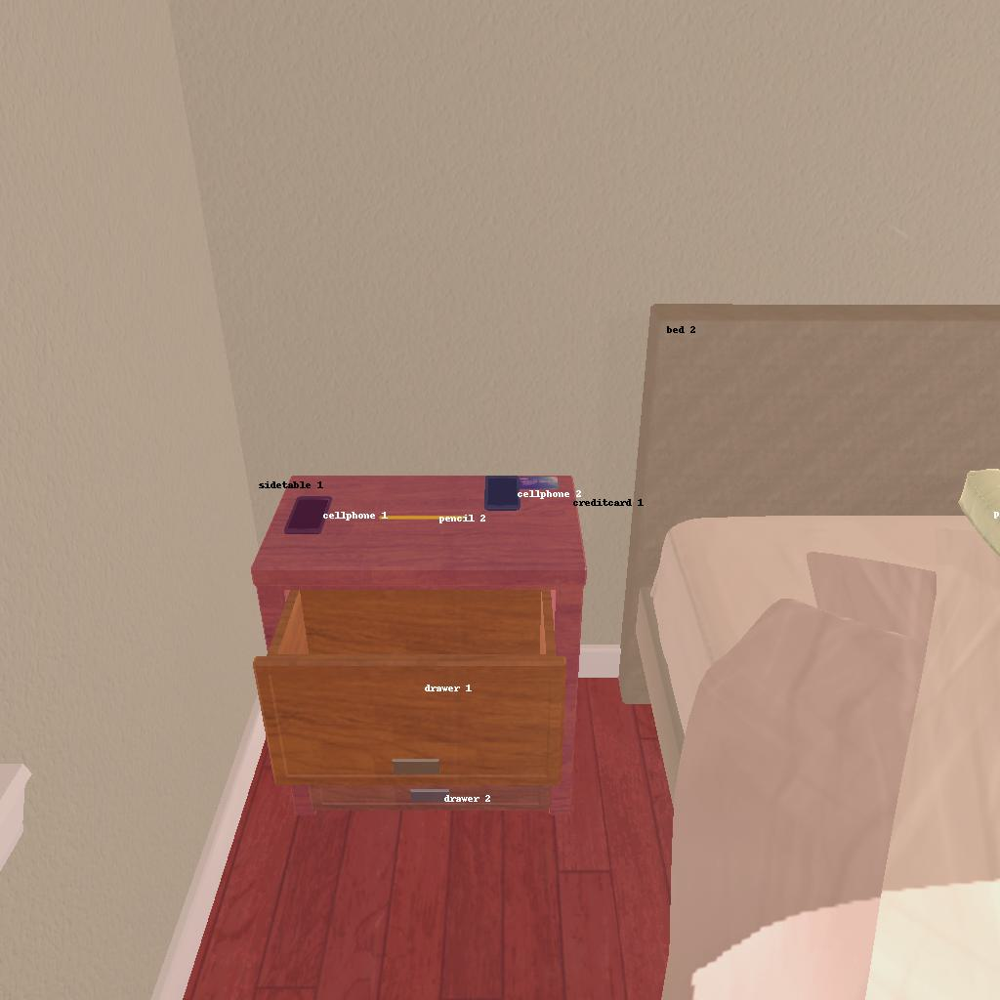

---------------------------------------------------------task: 6---------------------------------------------------------
--------------------------------------------------------------------------------------------------------------------------------------------------------------------
--------------------------------------------------------------------------------------------------------------------------------------------------------------------
Step:--------------------------------------------------------------------------7-------------------------------------------------------------------------------
----------------------------------------
VLM Prompt:
Image1:
**Instruction**
1. Analyze the provided image to identify all visible household objects, focusing on those relevant to the task description "put a cd in safe."
2. Use the analysis of the image and the task hint "The agent must find an object of the desired type, pick it up, find the correct location to place it, and put it down there." to answer the question: what is the most reasonable action in the choices for the task description "put a cd in safe"?
4. Decide and write the answer using the template: The answer is: (i): , where i is the real number. If there is no desired object in the image, search every place based on **Initial Observation** to find the object. And if no one is exactly correct, choose a similar answer.
**Initial Observation**
You are in the middle of a room. Looking quickly around you, you can see bed (1-2), dresser (1), sidetable (1-2), drawer (1-11), desk (1), garbagecan (1), safe (1)
**Answer Choices**
(1): go to bed 1
(2): go to dresser 1
(3): go to bed 2
(4): go to sidetable 1
(5): go to drawer 1
(6): go to sidetable 2
(7): go to drawer 3
(8): go to drawer 4
(9): go to desk 1
(10): go to garbagecan 1
(11): go to drawer 5
(12): go to drawer 6
(13): go to drawer 7
(14): go to drawer 8
(15): go to drawer 9
(16): go to drawer 10
(17): go to drawer 11
(18): go to safe 1
(19): open drawer 2
(20): close drawer 2
(21): examine drawer 2
**Answer**
Let's think step by step by following the instructions.
----------------------------------------
----------------------------------------
Original Response:
The task is to put a CD in a safe. First, we need to find a CD. The image shows sidetable 1 with two drawers (drawer 1 and drawer 2), with drawer 2 being open. There are no visible CDs on the sidetable or in the open drawer. According to the initial observation, there are various other places to search for a CD.
The most reasonable action from the choices given, to complete the task of putting a CD in a safe, would be to search the locations where a CD might be stored. Since we cannot see a CD in the open drawer (drawer 2), we should start by searching the other drawers.
The answer is: (5): go to drawer 1. If no CD is found there, continue to the next drawer and so on until the CD is found. Once the CD is found, the next action would be to go to safe 1 to put the CD in it.
----------------------------------------
----------------------------------------
>>> Refine Original VLM Response and Get Pure Action: go to drawer 1
----------------------------------------
-----------------------------------------------------------------
Running time: 8.941042423248291 seconds
Total Money: 1.7560100000000005
-----------------------------------------------------------------
-----------------------------------------------------------------
Text Observation:You arrive at loc 4. The drawer 1 is open. On the drawer 1, you see a pillow 1, a cellphone 1, a cellphone 2, a creditcard 1, and a pencil 2.
-----------------------------------------------------------------
UNSUCCEED